编写日期：2016-04-11
课 题 | 如何通过软件获得硬件的网络地址 | 编者 | 陈荣峰 | |||||||
类 别 | ○工艺 ○质量 ●设备 ○安全 ○成本 ○现场 ○其他 | |||||||||
部门/车间 | 制丝车间 | 班组 | 电工组 | 岗位 | 维修电工 | |||||
内
容
| 如何通过软件获得硬件的网络地址 一、 简介： 本“一点课（OPL）”主要讲述如何通过人机界面软件（IDE）和PLC软件（S7）去获得硬件的网络地址。下面以加料机“主机压空总压力” 传感器为例进行讲述。 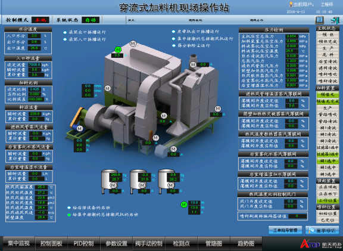 加料机（穿流式加料机现场操作站） 图1 二、 从人机界面显示界面获得硬件加料机“主机压空总压力” 传感器相关信息如图1： 1) 打开IDE软件； 2) 打开加料机（如6400线的ZY2）项目； 3) 打开对应画面；（由于1-3点这都是基础知识，在这不在描述） 4) 点击“主机压空总压力”压力数据值对应控制窗口获得对应标签名称：“Galaxy:rZY2_JLJ.JL.SJ_AIR_PRESS1”；如图2 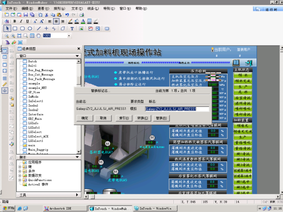 通过INTOUCH获得压力的标签 图2 5) 通过IDE获得标签对应的PLC地址（由于该表比较大建议将该表复制到EXCEL表然后查找就会比较快）：如图3得“SJ_AIR_PRESS1”对应DB306，REAL132，就是对应PLC的DB306.DBD132； 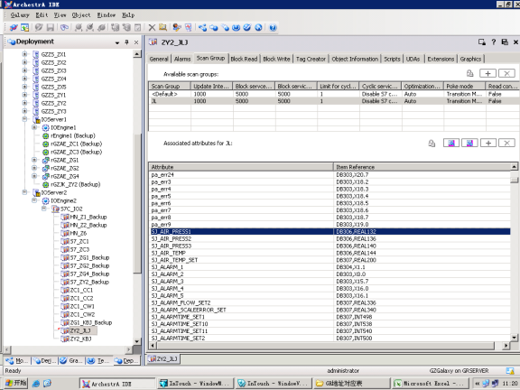 IDE中数据通信点表 图3 “Galaxy:rZY2_JLJ.JL.SJ_AIR_PRESS1”剖析： Galaxy:IDE的整个网； rZY2_JLJ：冗余数据引擎对应的项目，它指向与ZY2_JLJ；如图4； JL：ZY2_JLJ下的字目录； SJ_AIR_PRESS1：“主机压空总压力”压力数据值对应的标签见图3 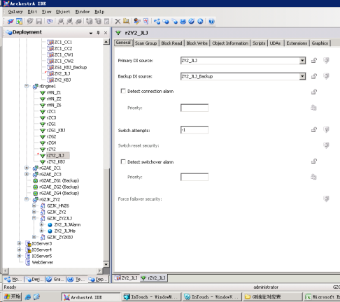 rZY2_JLJ和ZY2_JLJ关系 图4 三、 通过PLC编程软件（S7）从上面获得的数据地址（DB306.DBD132）获得硬件的网络地址；
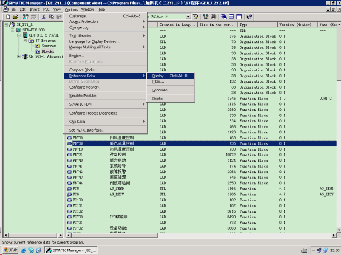 打开交叉索引 图5 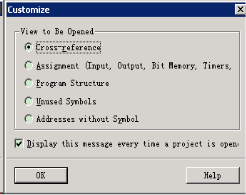 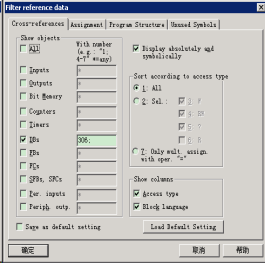 打开交叉索引 图6 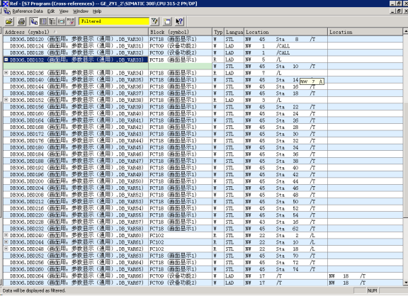 打开交叉索引 图7
1) FC718的NW45由DB788.DBD314对DB306.DBD132进行数据的写入如图8； 2) FC700的NW41由PID513对DB788.DBD314进行数据的写入如图9； 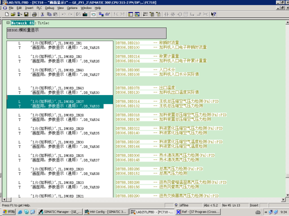 FC718的NW45图8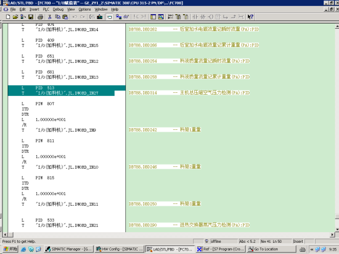 FC700的NW41图9
1) 打开硬件组态： 2) 在硬件组态中找出PID513，即PLC从硬件读入的地址PID513； 3) 确认是PA网络地址4 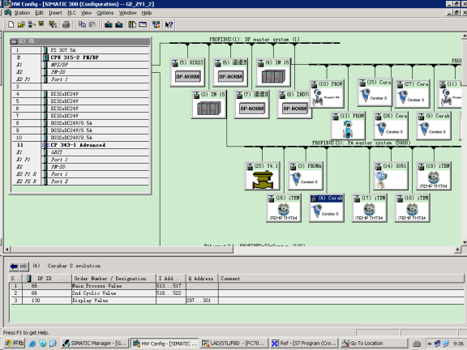 硬件组态 图10 四、 小结： 通过该过程就能快速的查到国内所建自动化程序PLC上硬件的网络地址。国外的下次有机会再说！谢谢！ | |||||||||
课程 审核意见 | 适合培训岗位 | 维修电工 | 培训方式 | ●面授 ●传阅 ○观看视频 | ||||||
适用性较强，可用于新员工、转岗/复岗员工的上岗前培训。 | ||||||||||